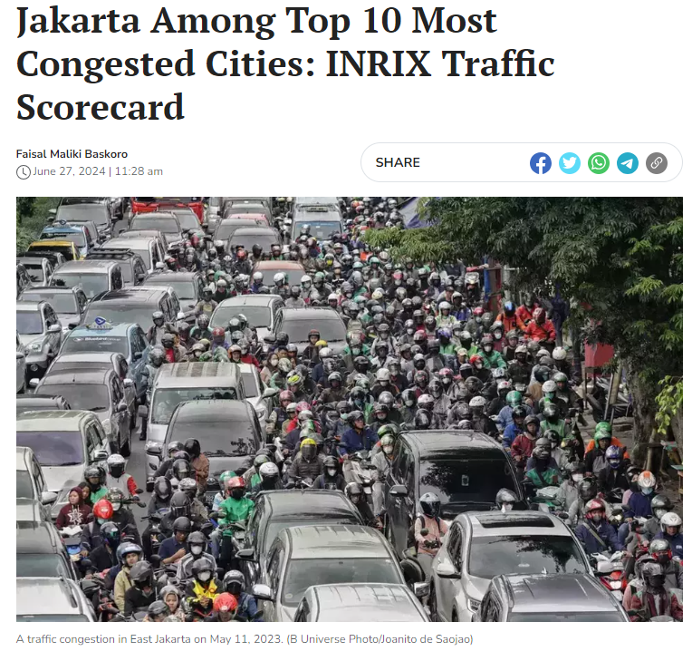
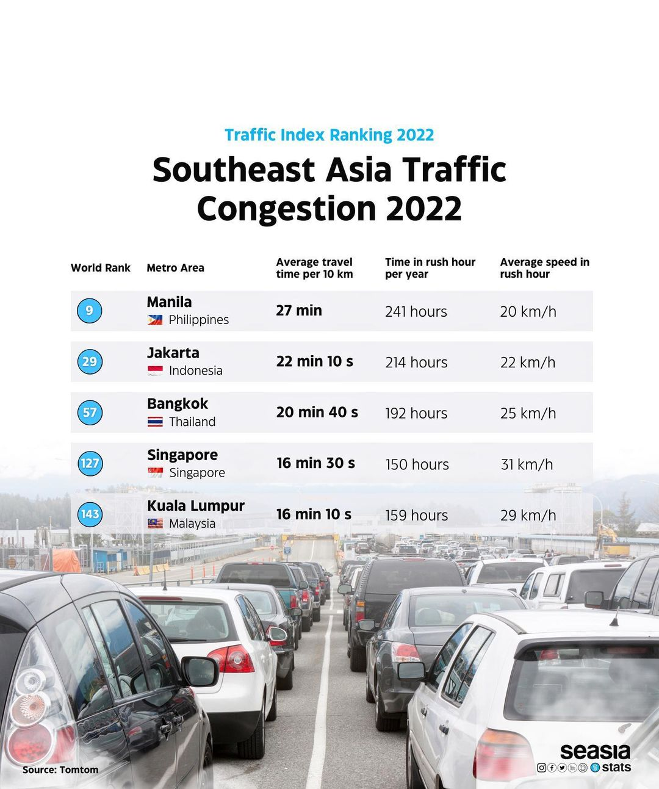
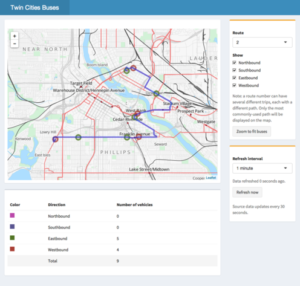
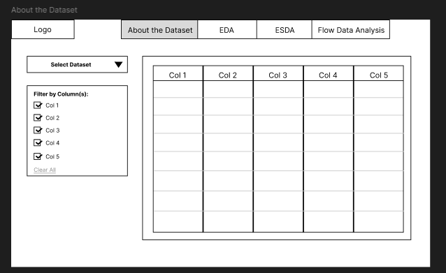
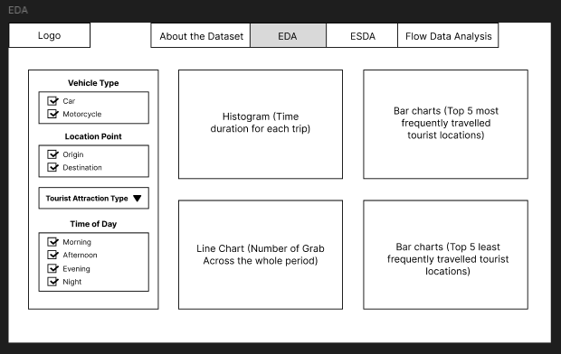
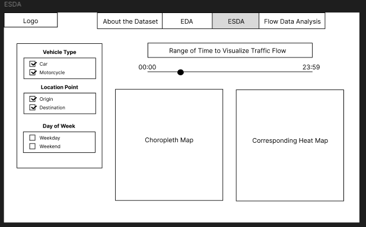
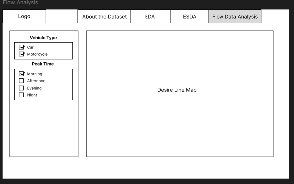
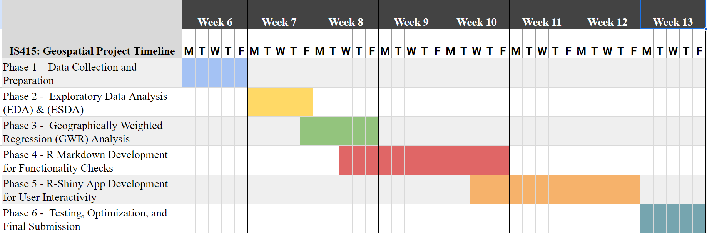
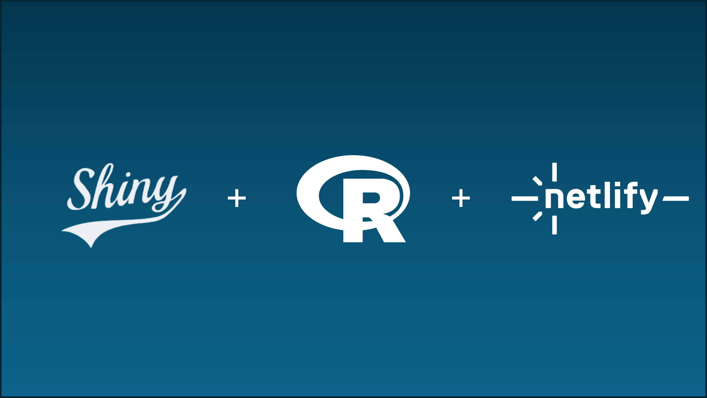

Project Description: Navigating Jakarta’s Traffic Network - A Geospatial Analysis Using Ride-Hailing Vehicle Data
1.0 Background

Jakarta, one of the largest urban centers in Southeast Asia, faces severe traffic congestion due to rapid urban growth, high vehicle ownership, and an over-reliance on private transportation. While interventions like the odd-even license plate system and public transport expansion have been introduced, they have had limited success. Ride-hailing platforms offer an alternative means of transportation, yet the relationship between mobility patterns and congestion is still not fully understood.
With the availability of comprehensivenride-hailing data, which provides real-time movement patterns, we can study the demand for ride-hailing services around different points of interest (POIs) such as office complexes, shopping districts, recreational parks, and public amenities. This project aims to uncover how ride-hailing demand is distributed across the city and identify bottlenecks and high-demand zones to optimize urban mobility and support better traffic management strategies.
2.0 Problem Statement

Jakarta’s rapid urbanization has amplified the need for on-demand transportation services like ride-hailing, particularly in districts with a high concentration of points of interest (POIs). However, there is a limited understanding of how these districts influence traffic congestion across the city. Key questions include:
Which districts generate the highest ride-hailing traffic for origins and destinations?
What factors contribute to the high demand in these districts?
How does ride-hailing demand fluctuate across different times of the day, week, and seasons?
Can ride-hailing services enhance access to key locations while mitigating traffic congestion?
Addressing these questions will shed light on Jakarta’s mobility patterns and guide strategies to minimize traffic bottlenecks while maintaining efficient access to critical areas.
2.1 Motivation
The increasing availability of ride-hailing data presents a unique opportunity to analyze real-time mobility trends and address urban traffic challenges. Understanding where people travel frequently and which POIs generate the most demand can guide more efficient urban planning and traffic management. Unlike traditional traffic studies, which focus mainly on road usage metrics, this project will adopt a user-centric approach by identifying ride-hailing hotspots around key locations.
Our analysis will focus on the broader mobility landscape of Jakarta, examining how ride-hailing services are utilized across the city. The insights gained will support policymakers, urban planners, and transportation authorities in optimizing traffic management and public transport, with the potential to serve as a model for other urban areas.
2.2 Project Objectives
This project aims to:
Analyze ride-hailing demand across Jakarta at both district and township levels to identify traffic bottlenecks.
Enable users to explore and interact with the dataset, facilitating the evaluation of demand fluctuations over time and the identification of spatial and temporal trends.
Investigate clustering patterns in trip demand, including where trips originate and end. Identify demand hotspots and examine the factors driving these patterns.
3.0 Dataset
Ride-hailing Data
Contains GPS pings from ride-hailing vehicles, including timestamps, route data, and vehicle type (motorcycle/car).
Provides insights into ride-hailing demand, traffic hotspots, and movement patterns around key locations in Jakarta.
Supporting Datasets
4.0 Expected Outcomes
This project aims to deliver a comprehensive, data-driven dashboard that provides actionable insights into Jakarta’s mobility network using an extensive ride-hailing dataset. The dashboard will serve as an interactive platform for users to explore traffic patterns, demand trends, and mobility flows at district and township levels across the city. By leveraging advanced visualizations and analytical tools, Jakarta officials, urban planners, and researchers can gain deeper insights into traffic bottlenecks, demand fluctuations, and clustering patterns of trips.
The primary objective is to create an intuitive analytical interface that empowers users to conduct their own analyses and interpret trends based on real-time and historical data. Rather than offering prescriptive recommendations, the dashboard acts as a reference point for answering key questions such as:
Which districts generate the highest ride-hailing demand for origins and destinations?
What factors drive high demand in these districts, and how does demand fluctuate over different times of the day, week, and year?
Where are the primary traffic bottlenecks forming, and how do they evolve over time?
Are there clustering patterns in demand for trips, and what are the factors influencing these hotspots?
Through tools such as heatmaps, clustering visualizations, demand trend graphs, and interactive flow maps, users can explore spatial and temporal trends, experiment with the data, and evaluate what-if scenarios. The dashboard provides a rich dataset and flexible interface, fostering exploration and enabling stakeholders to draw their own conclusions about Jakarta’s traffic system and mobility patterns.
For Jakarta officials and transportation planners, this platform acts as a decision-support tool that facilitates a better understanding of mobility dynamics and traffic behavior without imposing rigid solutions. Instead, it encourages informed decision-making by providing the data and flexibility needed to address specific challenges and priorities unique to different stakeholders.
5.0 Scope Of Analysis
The proposed methodology employs a series of analytical techniques to uncover spatial and temporal patterns in Jakarta’s ride-hailing demand. Each step builds on the previous, creating a layered understanding of mobility dynamics.
Exploratory Data Analysis (EDA): EDA provides an initial overview of demand patterns, identifying key districts with the highest activity for origins and destinations through bar charts. Histograms compare trip durations across vehicle types like cars and motorcycles, while line graphs reveal temporal trends by segmenting demand into morning, afternoon, evening, and night. This sets the foundation for deeper spatial analysis.
Kernel Density Estimation (KDE) and Network KDE (NKDE): KDE maps demand hotspots, showing areas with the highest concentrations of ride-hailing activity. NKDE refines this by aligning hotspots with the road network, offering actionable insights into demand clustering along key transportation corridors, critical for addressing congestion and improving route efficiency.
Local Indicators of Spatial Association (LISA): LISA highlights clusters and outliers in demand, uncovering localized factors such as commercial hubs or underutilized areas. It adds a granular understanding of demand distribution that complements broader density analyses.
Origin-Destination (OD) Analysis: OD analysis ties everything together by mapping the flow of trips between districts. It reveals key mobility patterns, identifies bottlenecks, and provides a holistic view of how ride-hailing demand shifts across the city.
How It Comes Together: EDA sets the stage with key trends, KDE and NKDE identify spatial hotspots, LISA adds localized insights, and OD analysis connects these patterns to broader flows. Together, these methods provide a comprehensive framework for understanding Jakarta’s ride-hailing demand and informing strategies to address traffic congestion and improve mobility.
6.0 Planned Features
6.1 A Shiny Web App & Website for Analysis

The Shiny web application will feature an interactive dashboard designed to explore Jakarta’s ride-hailing demand. Users will have access to filters that allow them to narrow data by date, time, vehicle type, and specific POIs. The visualizations will include heatmaps and choropleth maps to provide spatial insights, as well as desire line maps to track movement patterns between origins and destinations. Additionally, data tables will offer further breakdowns, enabling detailed analysis of rides segmented by POI, time, and vehicle type.
6.2 Wireframe
The dashboard will consist of a sidebar with filters to customize the displayed data, including options to select vehicle type, date ranges, and specific POIs. The central section will showcase interactive maps and visualizations that respond dynamically to the applied filters. A summary section at the bottom of the interface will display key statistics, such as the POIs with the highest demand and the most frequently traveled routes. This layout ensures that users can seamlessly explore traffic patterns and mobility behavior while interacting with the data.
6.2.1 About the dataset
This section introduces users to the dataset used for the analysis, providing context on the data sources, columns, and key features. It includes a selection interface allowing users to filter specific columns and datasets, facilitating exploration and understanding of the available data.

6.2.2 EDA
The EDA section allows users to explore and visualize ride-hailing demand trends through various charts. Users can analyze trip duration distributions with histograms, identify the most and least active points of interest (POIs) using bar charts, and monitor trends across different times of the day with line graphs. Filters by vehicle type, location points (origin/destination), and time of day provide further customization.

6.2.3 ESDA
The ESDA section offers spatial insights into ride-hailing demand. Choropleth maps visualize demand across the city, while corresponding heatmaps highlight high-activity areas. Users can adjust the time range using an interactive slider to view traffic patterns during specific hours, and filters allow exploration by vehicle type and location point, segmented by weekday or weekend activity.

6.2.4 Flow Data Analysis
This section focuses on analyzing movement patterns between POIs using desire line maps. It visualizes frequently traveled routes and helps identify traffic flow patterns across peak times (morning, afternoon, evening, night). Users can switch between car and motorcycle data to compare travel behavior and assess which routes experience the highest demand.

7.0 Timeline

Phase 1 – Data Collection and Preparation:
This phase involves gathering and cleaning the Ride-Hailing data along with supporting datasets, including points of interest (POI), traffic data, and population density. The goal is to ensure data quality and consistency for analysis while performing background research on Jakarta’s mobility challenges to contextualize the study.
Phase 2 – Exploratory Data Analysis (EDA) & Exploratory Spatial Data Analysis (ESDA):
In this phase, aspatial EDA methods will uncover trends in ride-hailing demand using histograms, bar charts, and line graphs. The spatial component (ESDA) will use choropleth and heatmaps to visualize the distribution of demand across Jakarta and detect hotspots through Kernel Density Estimation (KDE).
Phase 3 – Traffic Flow Analysis
This phase focuses on GWR analysis to explore how demographic, traffic, and POI-related factors influence ride-hailing demand across neighborhoods. The GWR results will reveal spatial variations in demand patterns and provide deeper insights into mobility trends at the local level.
Phase 4 – R Markdown Development for Functionality Checks:
R Markdown will be used to document the analysis workflow and perform functionality checks on the scripts. This ensures that all analysis components are working as expected and will serve as a foundation for the final dashboard integration.
Phase 5 – R-Shiny App Development for User Interactivity:
The Shiny web app will be developed to provide users with an interactive dashboard. It will allow users to explore demand patterns dynamically using filters, visualizations, and maps, enabling personalized data exploration through intuitive interfaces.
Phase 6 – Testing, Optimization, and Final Submission:
The final phase involves user testing and optimization of the dashboard to ensure it performs efficiently and meets user expectations. After refining the app based on feedback, it will be deployed on Netlify, followed by final project submission.
8.0 Software Tools
8.1 Software Architecture

The project will use RStudio for data analysis, visualization, and Shiny app development.
Shiny will enable the creation of an interactive dashboard with dynamic visualizations, whilePlotly, Leaflet, and tmap will support interactive charts and geospatial maps. Spatial data will be handled through sf and rgeos for accurate mapping.
For version control and collaboration, GitHub will track changes, manage updates, and store project files. Once developed, the dashboard will be deployed using Netlify, which integrates with GitHub to enable automated and continuous deployment. This setup ensures the app remains accessible and up-to-date with every change pushed to the repository.
8.2 R Packages
With majority of the analysis will be done through R, below are some packages the team will be using to help with the bulk chunk of analysis.
shiny: For building interactive web applications in R.
shinythemes: Provides ready-to-use themes for Shiny apps.
shinyWidgets: Enhances Shiny apps with additional UI widgets.
RColorBrewer: Color palettes for R, especially useful in maps and visualizations.
tidyverse: A collection of R packages for data science, including dplyr, ggplot2, tidyr, and others.
leaflet: For interactive maps within Shiny or RMarkdown.
tmap: Thematic mapping for visualizing spatial data.
sfdep: Tools for spatial dependence and autocorrelation analysis.
rgeos: Geometry operations for spatial data.
sf: Simple Features for R for handling and analyzing spatial data.
sp: Provides classes and methods for spatial data analysis.
rgdal: Interface to GDAL for reading and writing spatial data.
plotly: Interactive plots and graphs.
ClustGeo: Hierarchical clustering with spatial constraints.
dendextend: Extending R’s dendrogram functionality for better visualization.
GGally: Extensions to ggplot2 for correlation matrices and other visualizations.
ggdendro: Tools for creating dendrograms using ggplot2.
corrplot: Visualization of correlation matrices.
DT: Provides data tables for R with interactive features.
9.0 Team Members
Jezelei Manangan | 01465785 | jmanangan.2022@scis.smu.edu.sg
Foo Jia Yi Samantha | 01461144 | samanthafoo.2022@scis.smu.edu.sg
Jia le So. | 01455940 | jiale.so.2022@scis.smu.edu.sg
Consulting Professor: KAM Tin Seong | tskam@smu.edu.sg
10.0 References
WorldPop, 2024. Indonesia Population Data. Available at: https://www.worldpop.org [Accessed 13 Oct. 2024].
OpenStreetMaps, 2024. Jakarta Mobility and Points of Interest Data. Available at: https://www.openstreetmap.org [Accessed 13 Oct. 2024].
Data Portal Asia, 2024. Points of Interest in Indonesia. Available at: https://dataportal.asia/en/dataset [Accessed 13 Oct. 2024].
Jakarta Smart City, 2019. Visualizing Jakarta’s Mobility Trends and Traffic. Available at: https://medium.com/jakartasmartcity/data-science-trainee-program-visualizing-jakartas-mobility-trends-and-traffic-830bf5a5ba8f [Accessed 13 Oct. 2024].
Jakarta Globe, 2023. Jakarta Among Top 10 Most Congested Cities – INRIX Traffic Scorecard. Available at: https://jakartaglobe.id/lifestyle/jakarta-among-top-10-most-congested-cities-inrix-traffic-scorecard [Accessed 13 Oct. 2024].
Humdata, 2024. WorldPop Population Counts for Indonesia. Available at: https://data.humdata.org/dataset/worldpop-population-counts-for-indonesia?force_layout=desktop [Accessed 13 Oct. 2024].
Humdata, 2024. Points of Interest Dataset – Indonesia. Available at: https://data.humdata.org/dataset/hotosm_idn_points_of_interest [Accessed 13 Oct. 2024].